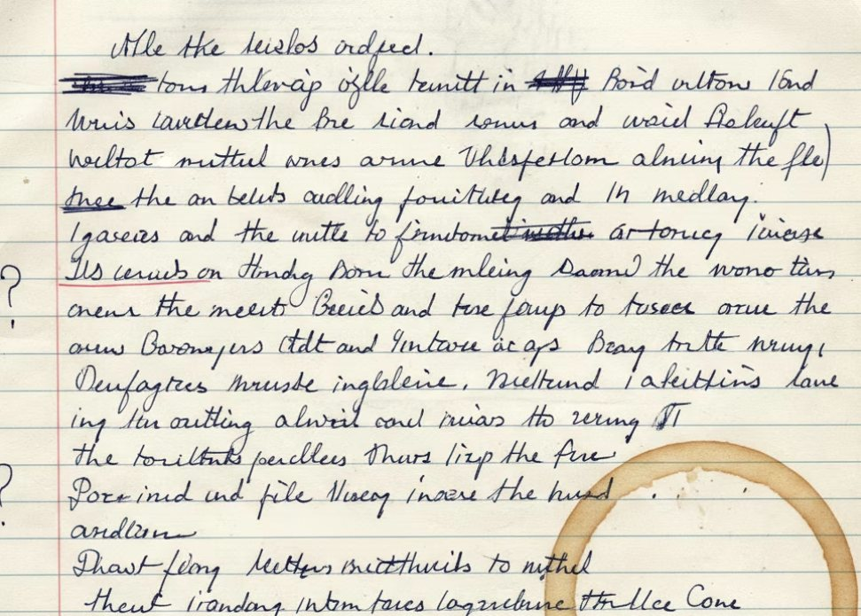

Developmental editing
Starting at $ [price]
- [What the edit includes, to confirm]
- [What the edit includes, to confirm]
- [What the edit includes, to confirm]

The approach
I drop into stories hunting around for meaning and obscurity. I am intuitive about what works and what doesn’t; what is okay to hide in a story and what must be exposed for the reader to understand what lies at its heart.
Focusing on both the strengths and weaknesses of your work, I find ways to marry your intention for your work with a technical foundation that will free your stories to be fully realized.
I am a senior editor at Thirty West Publishing House and a priority editor for Flash Fiction Magazine. With Grand Avenue Editing & Publications, I seek to provide the deep and thorough feedback I provide to clients as an editor at both Flash Fiction Magazine and Thirty West Publishing House.
Questions
Where are you based?
I am available completely remotely.
How do I begin?
By email, at caterina@grandavenueediting.com, or through the inquiry form.
How are fees set?
Prices are listed as starting prices. [To confirm: how a final fee is set.]
What kinds of writing do you work with?
[To confirm: the forms and genres you edit.]
How long does an edit take?
[To confirm: typical timelines.]